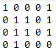

Se debe de crear un archivo de texto el cual debe de cumplir lo siguiente:
- Debe solo contener unos(1) y ceros(0)
- Los numeros deben estar separados por un espacio
- No debe tener espacios al final de cada fila
- No debe tener linea en blanco al final del archivo
El archivo se deberia de ver de la siguiente manera:
